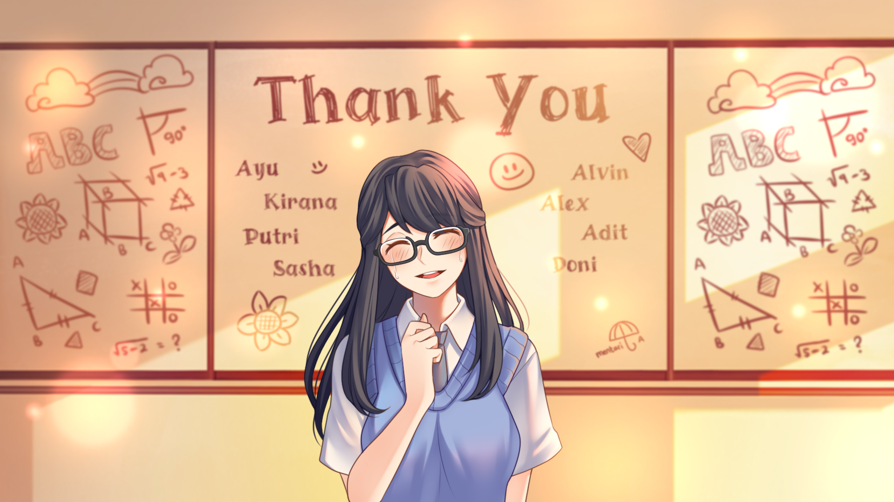

The Sun Shines Over Us (Menggapai Matahari)

The Sun Shines Over Us (Menggapai Matahari)
Contributed to branching narrative and choice design, reviewing story routes, scenes and ending consistency against the design direction.
- Role
- Lead Game Designer
- Platform
- Steam, iOS, Android
- Genre
- Narrative
- Downloads
- 500K+ (free)
Best Narrative Game, IGDX 2022. Finalist, LevelUP KL 2021.
- Reviewed story flow and player-facing outcomes across multiple endings.
- Reached 500K+ downloads as a free game.
Full case study
- Intention
- All 6 endings feel genuinely reachable: not hidden behind a guide, not decided by Act 1.
- Process
- Mapped 47 nodes in Google Sheets with weighted outcome values per ending, and defined pass/fail criteria for each playtest cycle before running it.
- Challenge
- 80% of players hit the same two endings. Act 1 choices were quietly narrowing the story.
- Solution
- Moved the heaviest decision weight from Act 1 to mid-game and separated emotional tone flags from outcome flags. All 6 endings normalised in the next test cycle.
- Outcome
- 500K+ free downloads and Best Narrative Game at IGDX 2022.